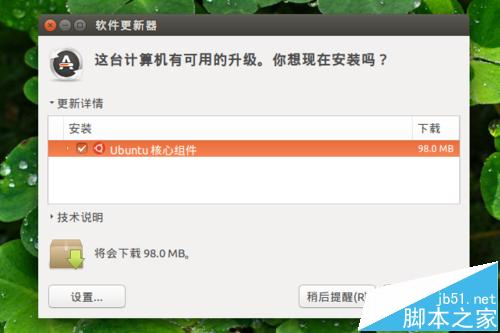
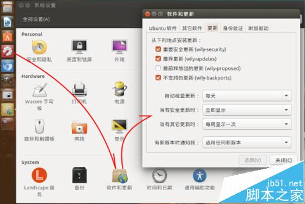
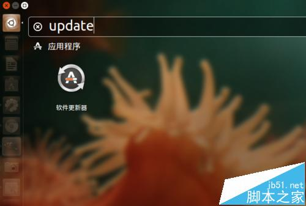
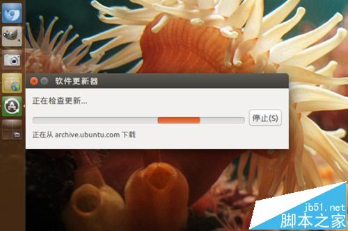
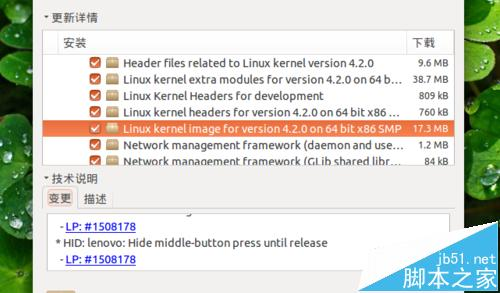
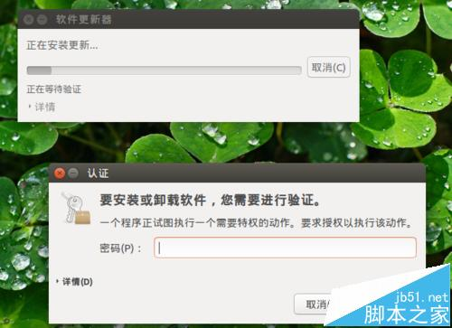
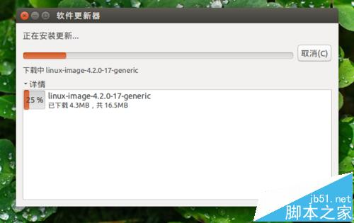
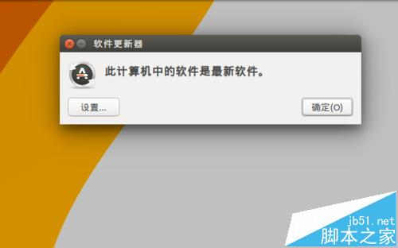
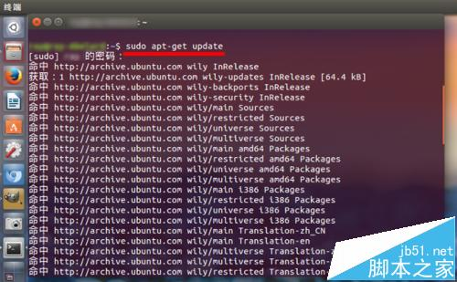
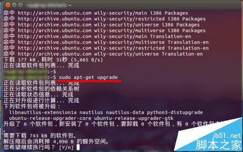

| 创建时间： | 2016/3/17 20:30 |
| 标签： | 减藏 |
| 来源： | http://www.jb51.net/os/Ubuntu/397838.html |
Ubuntu 系统有自己的自动更新升级机制，但是有时候也需要手动执行更新。比如，某软件发现了漏洞，需要及时更新补丁，但是自动升级的提示还没有出现，这时就需要手动执行更新升级，看看有没有可用的更新。
Ubuntu 15.10候最终选版ISO镜像下载 正式版10月22日发布

一、图形界面更新升级
1、访问 Ubuntu 的更新设置。在左侧启动器栏上，点击“扳手齿轮”图标的“系统设置”图标，启动系统设置，点击打开“软件和更新”，然后单击“更新”选项卡。

2、如果需要手动执行系统更新：按下键盘上的 Win 键；或者点击左侧启动器栏上方的 Ubuntu 标志图标，启动 Dash；在搜索框中输入：update。

3、Dash 将筛选出“软件更新器”这个应用程序。按下回车，软件更新器应用程序即会启动，并开始检查更新。

4、视网络状况，更新检查会花一段时间。待检查结束，而且目前存在需要更新的内容，系统会用对话框的方式进行提示。
5、如果想了解所要更新项目，它们具体有哪些改动，可以点击一个项目，然后展开对话框下方的“技术说明”。

6、点击“立即安装”，开始本次更新过程。大部分情况下，更新需要输入用户密码。

7、更新的下载和安装过程开始。在此期间，可以展开“详情”，时刻关注下载、安装进度。

8、更新被安装完成后，根据不同情况，可能需要重新启动系统；如果不是非常重要的更新，系统也不会要求重新启动。

二、命令行界面更新升级
1、按 Ctrl＋alt＋t，打开终端，输入：$ sudo apt-get update，用于检查当前的源服务器上，是否有可用的更新。

2。接着执行：$ sudo apt-get upgrade，用于对当前已经安装的包进行升级。
上述命令如果出现不成功的提示，有可能是因为软件包之间的依赖关系导致的问题。这时，可以用以下命令代替：$ sudo apt-get dist-upgrade

相关推荐：